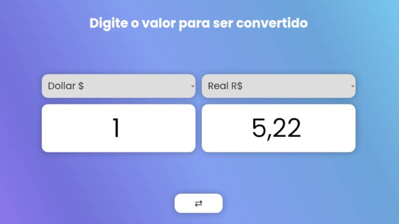
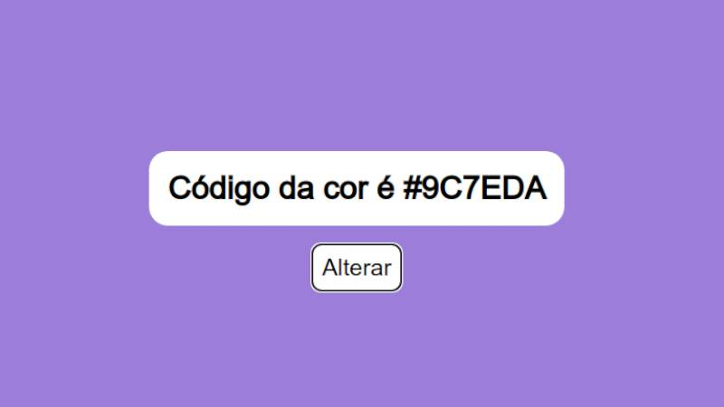
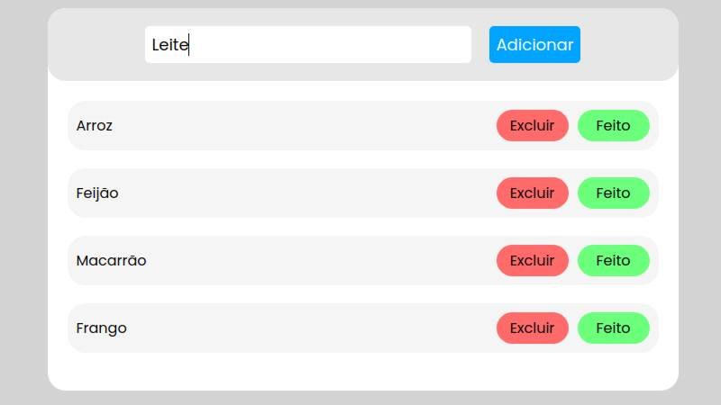
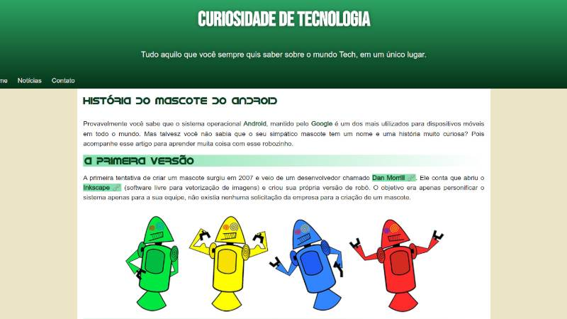
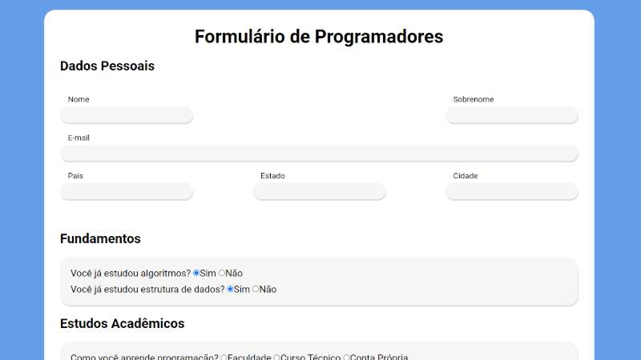
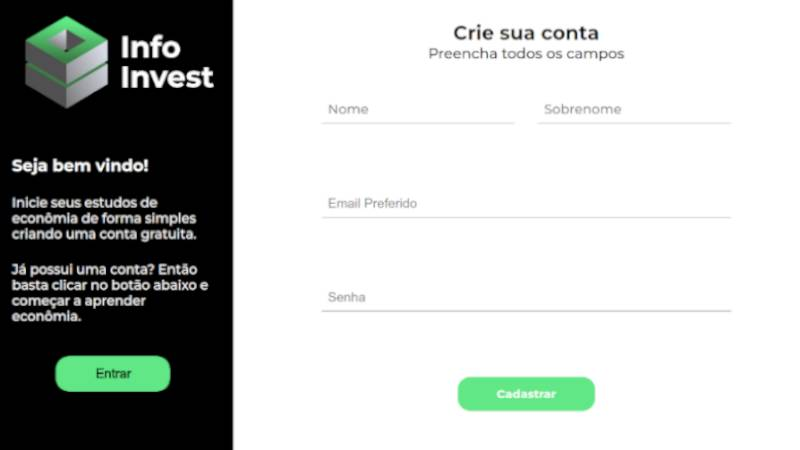

Olá! Me chamo
Thiago Benevide
Desenvolvedor de software
e apaixonado por tecnologia
Desenvolvendo com JavaScript



Utilizando apenas CSS e HTML



Manutenções em Computadores
Como deixar o Windows 10 mais Rápido
Como Trocar a pasta Térmica do Computador
Como Evitar a Tela Azul do Windows
Sobre
Sou nordestino, moro em uma cidade no interior de Pernambuco chamada Custódia. E a principio tinha como objetivo profissional engenharia civil que mais tarde, foi completamente excluído.
Tive acesso a um computador ainda criança com 10 anos, até os meus 16 anos fazia trabalhos escolares, manutenções simples com o sistema operacional Windows e componentes de hardware.
Foi então aos meus 17 anos que ouvi falar pela primeira vez em programação e desde então comecei a descobrir como as peças do computador se conectavam com o software.
Então até hoje não paro de procurar, ter dúvidas, aprender e claro errar. Mas evoluindo aos poucos com criações de projetos web e desenvolvimento de forma geral.
Hoje em dia faço faculdade de Bacharelado em Sistema de Informação na Unidade Acadêmica de Serra Talhada (UAST-UFRPE).
De lá para cá, compreendi lógica de programação, algoritmos e estrutura de dados. Porém ainda sigo em estudos com livros e vídeos sobre esta área gigantesca.
Atualmente procuro atuar na área de desenvolvimento web e resolver problemas com JavaScript, mas com conhecimento básico em C, Java, Python e manutenção de computadores.
Neste portfólio é apresentado tudo aquilo que aprendi a resolver nos meus últimos 9 anos de minha vida.